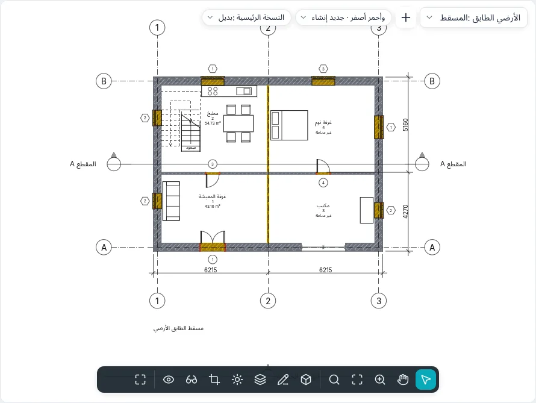

المراحل والهدم
يُرسم الترميم على مراحل: الوضع القائم، والإنشاء الجديد، وعند الحاجة المراحل الوسيطة. يُنشأ كل عنصر في النموذج في مرحلة، ويمكن هدمه في مرحلة لاحقة؛ ويعرض كل عرض النموذج كما هو في مرحلته، مع مرشّح المراحل الذي يحدد كيف تظهر العناصر الجديدة والقائمة والمهدومة والمؤقتة. وهكذا يعطي نموذج واحد مسقط الوضع القائم، ومسقط الهدم، ومسقط المشروع، واللوحة المقارنة بالأصفر والأحمر.
حالات المرحلة
تعطي مرحلة العرض والمرحلتان الخاصتان بالعنصر حالته في ذلك العرض:
| الحالة | العنصر… |
|---|---|
| جديد | يُنشأ في مرحلة العرض |
| قائم | يُنشأ في مرحلة سابقة ولا يُهدم حتى مرحلة العرض |
| مهدوم | يُنشأ في مرحلة سابقة ويُهدم في مرحلة العرض |
| مؤقت | يُنشأ ويُهدم في مرحلة العرض |
العنصر الذي يُنشأ بعد مرحلة العرض، أو يُهدم قبلها، لا يظهر في ذلك العرض.
مراحل المشروع
يفتح المشروع ▸ المراحل ▸ المراحل (نمط BIMopen: المشروع ▸ المراحل…) مربع الحوار المراحل، وفيه ثلاث علامات تبويب. للمشروع الجديد مرحلتان: الوضع القائم وإنشاء جديد.
في علامة التبويب مراحل المشروع تكون كل مرحلة صفًا مرقّمًا، من الماضي (في الأعلى) إلى المستقبل (في الأسفل)، مع الاسم والوصف. والنقر على الرقم يحدد الصف.
- يضيف إدراج قبل وإدراج بعد مرحلة بجانب المرحلة المحددة، وتُسمّى بالتسلسل (المرحلة 1، المرحلة 2…). لا يمكن إعادة ترتيب المراحل: أدرجها في المكان الصحيح.
- يزيل دمج مع ▸ السابق أو التالية المرحلة المحددة: تنتقل العناصر والعروض والجداول والغرف التي كانت تستخدمها إلى المرحلة التي تُدمج معها.
لا يمكن أن تكون الأسماء فارغة أو مكررة. يطبّق موافق علامات التبويب الثلاث معًا، في خطوة واحدة يلغيها تراجع (Ctrl+Z)؛ أما إلغاء في مربع الحوار فلا يغيّر شيئًا. ويعرض مفتاح معاينة في الترويسة العرض النشط مع التغييرات التي لم تُؤكَّد بعد، بالمرشّح المختار تحت المعاينة.
مرشّحات المراحل
في علامة التبويب مرشّحات المراحل يحدد كل مرشّح، لكل حالة (جديد، قائم، مهدوم، مؤقت)، هل تُرسم العناصر حسب الفئة (كما تقول أنماط العرض وتجاوزاته)، أو مُتجاوَز (بالتجاوزات الرسومية للحالة)، أو عدم العرض (فلا تُرسم ولا تُحدَّد).
| المرشّح المعرّف مسبقًا | جديد | قائم | مهدوم | مؤقت |
|---|---|---|---|---|
| إظهار الكل | حسب الفئة | مُتجاوَز | مُتجاوَز | مُتجاوَز |
| إظهار المهدوم + الجديد | حسب الفئة | عدم العرض | مُتجاوَز | مُتجاوَز |
| إظهار الجديد | حسب الفئة | عدم العرض | عدم العرض | عدم العرض |
| إظهار السابق + المهدوم | عدم العرض | حسب الفئة | مُتجاوَز | عدم العرض |
| إظهار السابق + الجديد | حسب الفئة | حسب الفئة | عدم العرض | عدم العرض |
| إظهار المرحلة السابقة | عدم العرض | مُتجاوَز | مُتجاوَز | عدم العرض |
| أصفر وأحمر | مُتجاوَز | مُتجاوَز | مُتجاوَز | عدم العرض |
يضيف جديد مرشّحًا (كل شيء حسب الفئة)، ويزيله حذف: إذا كان عرض ما يستخدمه يسأل مربع الحوار أولًا، وتنتقل تلك العروض إلى بدون. وفي المرحلة الأولى لا يعرض إظهار المرحلة السابقة شيئًا. ولرؤية كل شيء بلا تجاوزات، اختر بدون مرشّحًا للعرض.
التجاوزات الرسومية
في علامة التبويب التجاوزات الرسومية صف لكل حالة: خطوط الإسقاط وخطوط القطع (السماكة، اللون، نمط الخط)، وأنماط السطح وأنماط القطع (مرئي، النمط، اللون؛ ويعيد مسح التجاوزات أنماط الفئة)، ونصف درجة (خطوط وأنماط وتعبئات مخففة نحو الخلفية، دون ألوان المواد في العروض المظللة)، والمادة (لونها المظلل ومظهرها في العروض المظللة والواقعية).
تسري حيث يقول المرشّح مُتجاوَز. وتتقدم عليها مرشّحات العرض والرسومات حسب العنصر. وتتبع القيم الافتراضية العُرف الإيطالي: القائم رمادي، والمهدوم أصفر متقطع، والجديد أحمر، والمؤقت منقّط بنصف درجة.
مرحلة العروض
للمساقط ومساقط الأسقف المعلقة والمقاطع والواجهات والعروض ثلاثية الأبعاد ومساقط المساحات والجداول، في مجموعة المراحل من خصائصها، مرشّح المراحل والمرحلة. يأخذ العرض الجديد المرحلة الأخيرة وإظهار الكل؛ ويحتفظ تكرار العرض بالمرحلة والمرشّح، ثم يمكن تغيير كل منهما: الطابق نفسه في لحظتين. ويمكن لـقالب العرض أن يضبط المرشّح (مرشّح المراحل ضمن الخصائص المشمولة)، ولا يضبط المرحلة أبدًا.
في نمط BIMopen تفتح التسمية المرحلة · عامل التصفية أعلى العرض قائمة تغيّر هذه أو ذاك.
مراحل العناصر
لكل عنصر في النموذج (الجدران، الأبواب، النوافذ، المكونات، الأرضيات، الأسقف، الأسقف المعلقة، الأعمدة، السلالم، الدرابزين، المنحدرات، الواجهات الستارية) في مجموعة المراحل من خصائصه:
- مرحلة الإنشاء: مرحلة العرض الذي أُنشئ فيه العنصر (أو لُصق فيه)؛
- مرحلة الهدم: لا شيء، أو المرحلة التي يُهدم فيها؛ ولا تُعرض إلا مرحلة الإنشاء وما بعدها، ويلغي لا شيء الهدم.
ليس للتعليقات التوضيحية والأبعاد والنصوص وعناصر التفاصيل مراحل: فهي تنتمي إلى عرضها. وتتبع الجدران الفرعية لجدار مكدّس وأجزاء الجدار المنحني الجدار كله. وتُفتح المشاريع السابقة، ذات المرحلتين الثابتتين للجدران، بالمراحل التي تحمل الاسم نفسه.
هدم
تعمل أداة تعديل ▸ الأشكال ▸ هدم (نمط BIMopen: تعديل ▸ هدم) في المساقط والمقاطع والواجهات والعروض ثلاثية الأبعاد. تظهر المطرقة بجانب المؤشر، ويُبرز ما يمكن هدمه في مرحلة العرض. والنقرة تهدم العنصر في تلك المرحلة، في كل عروض المرحلة نفسها:
- يأخذ الجدار المهدوم معه أبوابه ونوافذه؛
- يصبح العنصر المُنشأ في المرحلة نفسها مؤقتًا؛
- إذا كان مرشّح العرض لا يُظهر المهدوم، يختفي العنصر فورًا.
ومع عناصر محددة مسبقًا، يهدمها هدم كلها فورًا، ثم ينتظر نقرات أخرى. ويُغلق Esc أو تعديل الأداة؛ وكل نقرة خطوة تراجع واحدة.

الحشوات
حيث يُهدم باب أو نافذة ويبقى جداره، تُملأ الفتحة من مرحلة الهدم فصاعدًا، بطبقات الجدار: يظهر ذلك في المسقط والمقطع والواجهة وفي العرض ثلاثي الأبعاد. وحيث تُفتح فتحة في مرحلة لاحقة لمرحلة الجدار، يكون الجدار كاملًا في المراحل السابقة.
تُحدَّد الحشوة بنقرة، مثلًا في مقطع مع إظهار السابق + الجديد: ويمكن تغيير النوع الخاص بها إلى نوع جدار أساسي آخر، لرسم حشوة مختلفة؛ أما حشوة المراحل السابقة للفتحة فلها دائمًا بنية الجدار. ولا تُنقل الحشوات ولا تُدوَّر ولا تُعكس ولا تُنسخ ولا تُلصق: فهي تتبع فتحاتها.
الغرف والجداول حسب المرحلة
تنتمي غرفة إلى مرحلة العرض الذي توضع فيه (والمرحلة الخاصة بها للقراءة فقط): يعرض المسقط غرف مرحلته فقط ويوسمها ويحددها، ويمكن أن يوجد الرقم نفسه في مراحل مختلفة. وتُحدّ الغرفة بالعناصر الموجودة في نهاية مرحلتها: هدم حاجز يغيّر غرف تلك المرحلة وما بعدها، لا غرف الوضع القائم. استخدم نسخ إلى الحافظة لغرفة من عرض، ثم لصق في العرض النشط في عرض من مرحلة أخرى: تنتقل الغرفة إلى تلك المرحلة بالخصائص نفسها.
لـجدول المرحلة ومرشّح المراحل كما للعروض (في جدول جديد تكون المرحلة المقترحة هي الأخيرة): الصفوف هي العناصر كما هي في تلك المرحلة، أي التي يُظهرها المرشّح. يسرد إظهار السابق + المهدوم الأبواب المراد إزالتها، وإظهار الجديد الأبواب المراد شراؤها. ويمكن إظهار الحقلين مرحلة الإنشاء ومرحلة الهدم وفرزهما وتصفيتهما وتعديلهما من الخلية.
ولـعوامل تصفية العروض قواعد على مرحلة الإنشاء ومرحلة الهدم: يساوي أو لا يساوي، وأصغر من / أكبر من للأقدم أو الأحدث في ترتيب المراحل.
وسائل إيضاح المراحل
لـمكوّن وسيلة الإيضاح الخاصية حالة المرحلة: مع قائم أو مهدوم أو جديد أو مؤقت تُرسم العيّنة بتجاوزات تلك الحالة، بجانب نصها.
التبادل
- IFC: في مشروع ذي مراحل، يطلب تصدير ▸ IFC تحديد المرحلة المراد تصديرها (وتُقترح الأخيرة). تُكتب العناصر الموجودة في تلك المرحلة، كل منها بحالته (Status: NEW، EXISTING، DEMOLISH، TEMPORARY) في مجموعة الخصائص المشتركة لفئته، ومع مرحلتيه بالاسم. وعند فتح ملف IFC تأخذ الكائنات ذات هذه الحالة المراحل المقابلة في المشروع.
- DWG وDXF: في تصدير تنسيقات CAD يضيف الخيار حالة المرحلة في اسم الطبقة إلى طبقة الفئة لاحقة الحالة (-EXST، -DEMO، -NEWW، -TEMP): الجدار المهدوم يذهب إلى A-WALL-DEMO.
ستأتي مطابقة مراحل النماذج المرتبطة مع النماذج المرتبطة.